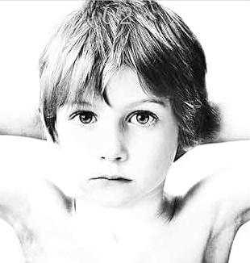

Bem Vindo, ( Login )

BOY
Banda: U2
Ano de lançamento: 20/10/1980
Gênero: Pós-Punk
Descrição: Boy é o álbum de estreia da banda de rock irlandesa U2, lançado em 20 de outubro de 1980. Produzido por Steve Lillywhite, o álbum recebeu resenhas positivas em geral. Os temas comuns entre canções do álbum são os pensamentos e frustrações da adolescência.O álbum incluía o primeiro single de sucesso da banda no Reino Unido, "I Will Follow". A liberação de Boy foi seguida pela primeira turnê continental do U2, da Europa e nos Estados Unidos.
Originalmente, o produtor da banda pós-punk Joy Division, Martin Hannett (que também produziu o single do U2, "11 O'Clock Tick Tock"), deveria produzir o primeiro single da banda, mas estava muito abalado após o suicídio de Ian Curtis. Boy foi gravado no Windmill Lane Studios, em Dublin com o produtor musical Steve Lillywhite. Lillywhite veio à fama com seu trabalho em 1978 com o single de estreia da banda Siouxsie and the Banshees, "Hong Kong Garden", que inclui um gancho peculiar desempenhado por um glockenspiel. A banda, que já ouviu Siouxsie and the Banshees, é usada por Lillywhite para adicionar capacidades de parte do glockenspiel distinta em "I Will Follow".
Algumas das canções, incluindo "An Cat Dubh" e "The Ocean", foram escritas e gravadas em estúdio. Muitas das canções foram retiradas de bandas dos anos 40 pelo repertório da música na época, incluindo "Stories for Boys", "Out of Control" e "Twilight".The Edge gravou todas as suas músicas usando a sua guitarra elétrica Gibson Explorer.
Faixas: 1. I Will Follow (3:36) 2. Twilight (4:22) 3. An Cat Dubh (4:47) 4. Into the Heart (3:28) 5. Out of Control (4:13) 6. Stories for Boys (3:02) 7. The Ocean (1:34) 8. A Day Without Me (3:14) 9. Another Time, Another Place (4:34) 10. The Electric Co. (4:48) 11. Shadows and Tall Trees (4:36)